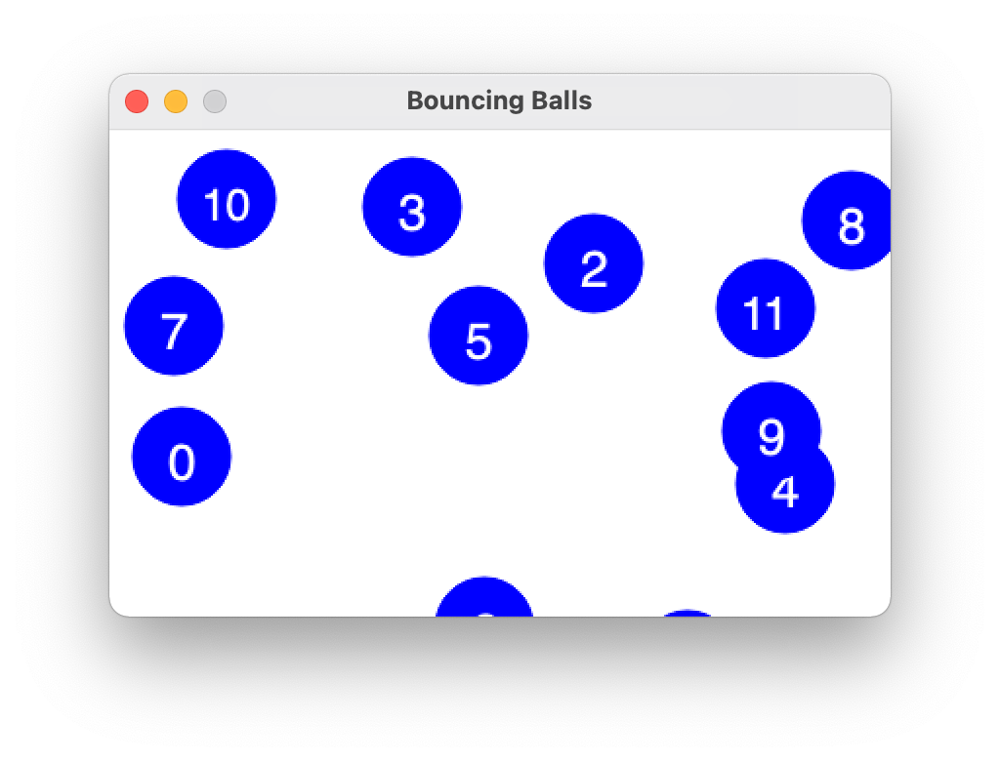
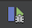
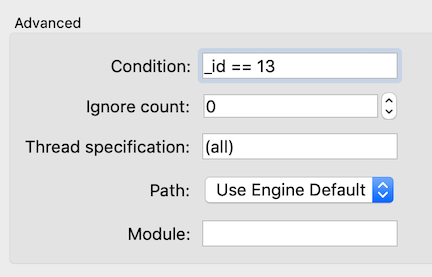
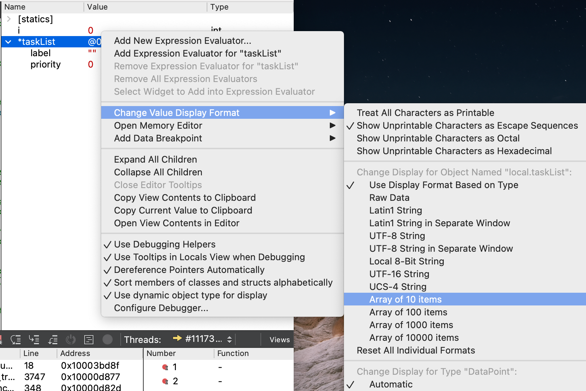

This exercise will add a few new debugger tricks to your repertoire that will come in handy for this assignment and into the future.
Debugging objects
This warmup exercise uses a bouncing ball simulation. The files ball.h and ball.cpp define a Ball class that models a ball bouncing in a window. The member variables for a ball include its x and y position, its velocity on both axes, and the window where the ball is drawn.
First, look over the code to get acquainted. Each ball is created with an ID number that is used as the label when drawing the ball. The ID number helps identify which ball is which in the drawing.
There is one provided test for the Ball class. This test creates a Vector of many ball objects and runs an animation loop to repeatedly move and redraw each ball.
Run the program and select the tests for ball.cpp. A new window pops up and a swarm of numbered balls bounce around within the window. Cool! After about 30 seconds, the test completes, and the window closes.

The ball animation has a bug that sometimes causes balls to bounce incorrectly. In this exercise, you will use the debugger to track down the bug.
Run the program again under the debugger and again select the tests for ball.cpp. While the balls bounce, arrange the graphics and the debugger windows on your screen so you can see both simultaneously. In the debugger window, set a breakpoint on the line in ball.cpp where pause is called at the bottom of the animation loop. The debugger stops at this breakpoint almost immediately.
Click the Continue button  to resume execution, and the program will complete another loop iteration and stop again at the breakpoint. Repeatedly click the Continue button and watch the graphics window as you do this. All of the balls move slightly on each iteration.
Object member variables
When stopped at the breakpoint, look at the "Variables" pane in the upper-right of the debugger window. Click the triangle to expand the allBalls Vector to see its contents.
Click the triangles to expand the vector elements at indexes [0] and [1]. Each element is one Ball object. The member variables for a Ball include its x/y position, velocity, and ID. As a convention, the names of our member variables begin with a leading underscore. Note that each Ball has its own copy of the fields. The _x and _y of allBalls[0] are distinct from the _x and _y of allBalls[1].
Click Continue a few more times, observing the updates to the member variables for allBalls[0] and allBalls[1] in the Variables pane and match those updates to the movement of those balls in the graphics window.
Answer this question in short_answer.txt:
Q1. How do the values of the member variables of allBalls[0] change from iteration to iteration? Specifically, what happens to the values of _id, _x, and _y?
The variable this
While the program is stopped in the debugger, click the red dot for the breakpoint on pause to delete it. Click to add a new breakpoint on the first line of the Ball::move method. Now click Continue. The debugger is now going to stop on each ball move. When stopped at your new breakpoint, look at the variables in the Variables pane. Because the program is stopped inside a C++ member function, there is a special variable called this that refers to the object currently executing the member function. When stopped inside the function Ball::move, this refers to the specific ball that is taking its turn to move. Expand this to see the member variables of the object. Use this ball's position and ID to locate the corresponding ball in the graphics window.
Click the Continue button to resume. The breakpoint is hit again on the next call to Ball::move. If you look at the Variables pane, you will see that this now refers to a different Ball object who is now taking its turn to move. Click Continue a few more times and note how the value in the Variables pane change. Each you'll see a different this with its own independent member variables. When both the graphical animation and the debugger making demands on your computer, things can bog down a a bit as you try to step and observe. Be patient!
Bring up the context menu for your breakpoint by right-click or control-click on the red dot and choose Disable breakpoint. Disabling the breakpoint leaves it in place but makes it inactive. It is marked with a dim red dot. Use Continue to resume execution, and the balls should freely animate without stopping.
Debugging in the context of randomness
When the program begins, each ball is created with a starting position and velocity; these values are chosen randomly. Quit and restart the program a few times to observe how the initial configuration varies from run to run. Occasionally a ball or two is initially placed in a location that straddles the bottom or right edge of the window. When you let the simulation run, you'll see that these balls don't move properly; they wiggle along the "stuck" edge. This is the bug we want you to diagnose.
Trying to debug a program using a randomized test case is tough. You could try to repeatedly quit and restart until you hit upon the right conditions to trigger the buggy scenario, but this would be tedious and frustrating. A better option is to configure the random number generator to behave deterministically. Our random.h library has a function setRandomSeed(int) used to configure the random sequence to a fixed starting point. Setting the seed at the beginning of the test case will cause it to use the same sequence of random values every time.
Edit the provided test for the ball animation to setRandomSeed to your favorite number. You only need to set the seed once, and should do so at the start of your test case, before all calls that generate random values.
Now run, quit, and restart the program a few times and you'll see the same configuration of balls is used on every run. Controlling the random seed allows you to bring order out of chaos!
The reproducible scenario you want for debugging is a starting configuration that has at least one ball stuck on the edge and enough of the stuck ball is visible that you can see its ID number. If using your favorite number as the seed didn't produce a configuration like this, pick a different number for the seed and try again. Once you have a seed that works, you're ready to go under the debugger to investigate further.
Run the program under the debugger. Control-click on the dim red dot for the disabled breakpoint in Ball::move and choose Enable breakpoint from the pop-up menu. With this breakpoint now active, it stops at every single move for every single ball. Since there are many balls and each moves many times per second, having to stop and continue on each move is slow-going. We would much rather narrow our focus to the ball in trouble. For example, in this case, we know the ID of the stuck ball. Ideally, we want to stop and single step through the turn of the stuck ball, but zip past all the others.
Conditional breakpoints
The debugger offers just the tool we need: a conditional breakpoint. A condition can be added to a breakpoint to tell the debugger to only stop the program at this breakpoint if a certain condition is met.
Control-click on the breakpoint's red dot and choose Edit breakpoint from the pop-up menu. Look for the text field labeled Condition. The condition is any C++ expression that is valid to be evaluated at the breakpoint location. It can refer to any local variables and parameters. Each time execution reaches the breakpoint location, the condition is re-evaluated, and the debugger stops only if the condition evaluates to true; otherwise, it behaves as if the breakpoint were inactive and just continues on.

Let's try it out! Add a condition on the breakpoint to only stop if _id is the ID number of the stuck ball in your configuration. The breakpoint in Ball::move will only stop when executing for the stuck ball. Each Continue should take the program straight through to this particular ball's next move.
Focus on observing what's happening to the stuck ball on each move. Do a couple of rounds with Continue, noting how the values of its member variables are changing. Contrast what is happening for the stuck ball to what you observed earlier for a correctly moving ball.
Answer the following question in short_answer.txt:
Q2. How do the values of the member variables of the stuck ball change from iteration to iteration? Contrast this to your answer to the previous question.
Instructor's Note: Conditional breakpoints in Qt debugger can be a little flaky, sometimes stopping when it shouldn't or not stopping when it should. I've seen that removing and resetting the breakpoint often straightens it out. If you give it a good try and Qt refuses to cooperate, just note your experience in your answer and move on to next question.
Changing variables in the debugger
You have a hunch that moving the stuck ball to a different position would cause it to fix itself. So far, we have used the Variables pane of the debugger only to look at the values of variables. Pro Tip: it is also possible to change a value! Double-click the value for the _x field of the stuck ball and change it to 0. Change its _y to 0 also. These changes forcibly move the stuck ball to position (0, 0). The next time this ball is drawn, it will appear in the upper left corner of the graphics window, the location where your changes have teleported the ball.
Answer the following question in short_answer.txt
Q3. After forcing the stuck ball to position (0, 0), does the ball move normally from there or does it stay stuck?
Given the above detective work, do you see what caused the ball to become stuck? What fix is needed to avoid getting into this situation? You may optionally modify the code to fix the bug, though this is not required.
A conditional breakpoint can be a godsend when debugging a program that works correctly almost all the time and only rarely hits a bug. Rather than having to wade through many uninteresting/irrelevant steps, the conditional breakpoint lets you narrow in on exactly and only the situation that needs attention.
In this exercise, you also learned how to set the random seed to make a test case behave deterministically in every run. Writing a test case that generates a large amount of random data to use as input can be great way to get broad "fuzz" coverage. If you let the computer choose the seed, it's even hitting different combos from run to run. But when trying to track down a test case failure, make use of setRandomSeed to ensure you are working through reproducible, repeatable behavior.
Debugging arrays and memory
The last task is to practice debugging on arrays and memory. Pointers can be a fairly lethal part of the C++ language, as there are many pitfalls you can fall into with harsh consequences. It will take your finest debugging skills to diagnose these woes, so let's do some practicing now.
Changing the display format
You've used the Variables pane to see the values of variables and know how to expand an ADT variable to see its contents. Our next Pro Tip is how to view the contents of an array.
In the assignment, you will be working with a small struct called DataPoint that is defined in the datapoint.h file. Its definition is shown below. It declares the type for the label and priority fields and packages those two fields together into a new struct type called DataPoint.
struct DataPoint {
string label;
double priority;
};
In the assignment, you will be working with arrays of DataPoint elements so let's practice how to use the debugger to examine and manipulate these arrays.
Open the warmup.cpp file and review the given code and the five provided test cases (four of which are currently commented out). The first test case demonstrates correct use of an array. Set a breakpoint within this test case on the statement after the loop has completed initializing the array elements. Run the program under the debugger and select the tests for warmup.cpp.
When the program stops at the breakpoint, note how the taskList variable is displayed in the Variables pane. A C++ array does not track its length, so the debugger does not know how many items to display. Unless told otherwise, the debugger assumes the array length is 1 and displays only the first item. To see additional items beyond the first, you must tell the debugger how many to display.
In the Variables pane, control-click on the variable taskList to bring up the pop-up menu. From the menu, select "Change Value Display Format," and in the submenu section labeled "Change Display for Object Named local.taskList," select "Array of 10 items." Be sure to choose the entry "Array of 10 items" that appears in the upper section of the popup menu. (The lower section repeats the same entries as the upper section; this lower entry is not the one you want).

The available options for array length are 10, 100, 1000, and 10000. If your array contains 50 items, you must choose whether to display only the first 10 or display 100, where the first 50 are valid followed by an additional 50 garbage items.
Examine array memory
Once you have changed the display format for taskList to an Array of 10 items, the Variables pane will display a triangle next the variable, and if you click to expand, it will display ten DataPoint structs, indexed by position.
The code allocates memory to store six DataPoint structs. The loop initializes the first three elements. Examine the values of the elements at indices [0], [1], and [2] to see that the contents are as expected.
The subsequent three elements are a valid part of the memory allocated for the array, but the contents of these elements have not been initialized. C++ has set the values according to what it normally does for that type of variable. In particular,
- the strings have been set to the empty string
- the numeric values are uninitialized, leftover garbage values
Use the debugger to view the contents at indices [3], [4], and [5] and confirm these default values.
Because we told the debugger to display a total of 10 elements, it also shows slots for indices [6] through [9]. These locations are outside the bounds of the allocated memory, but remember there is no such thing as bounds-checking. We told the debugger to display 10 items, so it does. What is being displayed is the contents of memory at those locations, despite being out of bounds. Unsurprisingly, these contents are even trashier than the valid but uninitialized entries. If you examine slots [6], [7], [8], and [9], you find all of the number and string values are an unpredictable mix of empty, <not accessible>, and random garbage.
What you see in the debugger parallels what you would observe in an executing program. The value of a valid variable that has not been initialized is the default value for that variable's data type. If your code accesses an index beyond the valid range of the array, you retrieve garbage contents. There is no helpful "out of bounds" message to alert you to your mistake. The programmer herself must be vigilant!
Debugging memory mistakes
The warmup.cpp file contains test cases to demonstrate various errors in handling array/memory. Whereas ordinary errors may cause a program to compute the wrong answer, mis-draw a fractal, or get stuck in a infinite loop, memory errors tend to have more catastrophic consequences. We want you to observe how some of the commonplace memory errors present themselves, so you can begin to get a feel for how you might diagnose such bugs when you encounter them.
There are four test cases that each demonstrate a particular error in handling array/memory:
- dereferencing a
nullptraddress - accessing an index outside the allocated array bounds
- deleting the same memory twice
- accessing memory after it has been deleted
Study the code in each test case to understand why the code is in error.
These test cases are currently commented out and you should add them into the program one at a time to observe each in isolation. Pro tip: To quickly change whether a section of code is commented in or out, select the lines and use "Toggle Comment Section" under the Edit Menu, bound to the hot key Command + /.
The first test case dereferences a nullptr address. Uncomment the code in this test case and rebuild. Run the program without the debugger.
Attempting to access a nullptr address (memory location zero) causes a swift fatal error – the program immediately halts with a pitiful cry for help written in red text to the Console window and Qt "Application Output" tab. This crash report says:
*** STANFORD C++ LIBRARY
*** The PQueue program has terminated unexpectedly (crashed)
*** A segmentation fault (SIGSEGV) occurred during program execution
This error indicates your program attempted to dereference a pointer
to an invalid memory address (possibly out of bounds, deallocated, nullptr, ...)
*** To get more information about a program crash,
*** run your program again under the debugger.
Whenever you encounter a crash, your next move should be to run that same code under the debugger.
When running under the debugger, a crashing program will halt at the critical moment without exiting. This will give you a chance to see where the code was executing at the time of the crash and to poke around and observe the program state. Run this test case under the debugger, and it will stop at the exact line of the bad dereference, allowing you to see that the value of taskList is 0x0. (nullptr is the memory address zero). Note that you may have to click on a different level in the debugger stack trace in order to get back to the warmup.cpp file.
After you're done exploring a test case, comment it back out. Then uncomment the next test case and try that one.
For each test case, you want to observe what happens without the debugger and again with it. Some memory errors present loud and clear with a distinctive crash; others silently and insidiously do the wrong thing. The very same error can get different results in a different context or when executing on a different operating system. All of this makes debugging memory errors extra challenging.
Consider yourself a detective who is looking through the evidence for clues that help you diagnose the situation from its aftermath. Look in the Application Output tab to see if any message was printed. Read the stack trace in the debugger to learn which action led up to the crash. Review variables to look for null or wild addresses or data values that appear uninitialized or corrupted.
Answer the following question in short_answer.txt:
Q4. On your system, what is the observed consequence of these memory errors:
- access an index outside the allocated array bounds?
- delete same memory twice?
- access memory after it has been deleted?
Note: There is no "right answer" to these questions as there is no single expected behavior for a given memory error. By trying the error, you will see one possible outcome, but the same code in a different program or running on a different computer could behave differently. The only predictable thing about memory errors is their unpredictability! In answering these questions, you are making observations about how the memory error presents on your system and learning what symptoms to look for should you need to diagnose a similar error in your own program.